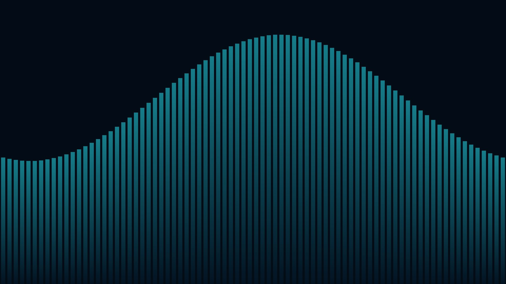
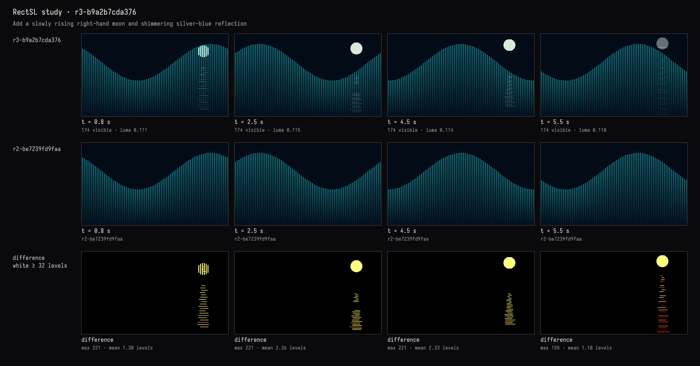
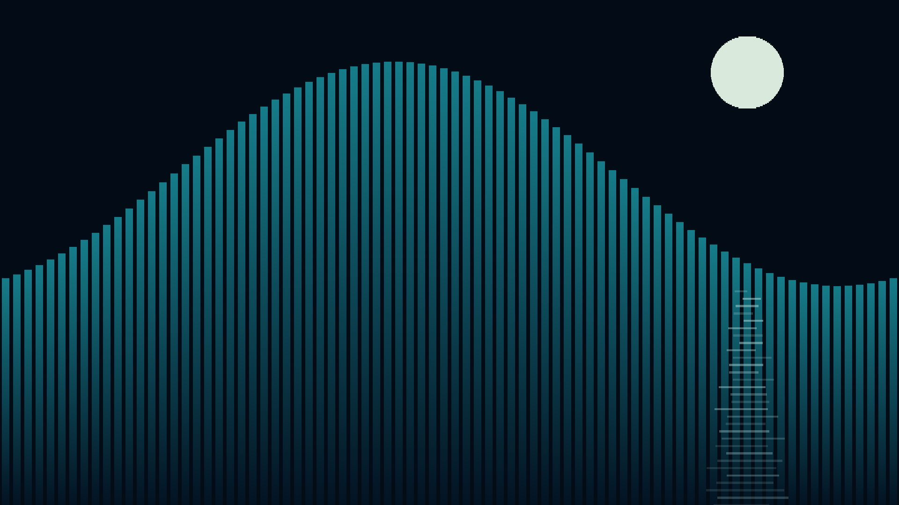

A moon and its shimmer
The recorded exchange: the request, the tool activity, every image the tools returned to the model, and its reply. Expand tool activity to read the steps; open an image to see it full size.
Add a moon that rises slowly on the right, with a shimmer of its light on the water beneath it.
Tool activity · 8 steps
Starting AI conversation
InspectRectSLStudy finished (1 ms)
CaptureRenderWindowRequest finished (30 ms)
Waiting for model
Visualizing moon effects
Visualizing moon effects
I'm thinking about how to create a moon effect using horizontal slices, with rectangles forming a circle. The height and width calculations are essential for getting the right proportions. I want to include reflections on the water’s surface while managing light glints and variations. I need to ensure smooth transitions, especially when the moon fades. I am considering whether to keep the moon as a crescent or a full disk, and I want to layer it appropriately with quotes from the tracks. Everything seems doable!
Next tool:
PatchRectSLStudyPatchRectSLStudy finished (1654 ms)
CaptureRenderWindowRequest finished (34 ms)
Completed



Added a pale round moon rising slowly on the right, with a broken silver-blue shimmer beneath it. The reflection flickers and widens towards the bottom, following the water’s height.
The live view matches the requested composition, and sampled frames show the rise. The original tide is unchanged; moonlight fades gently at the loop boundary. Compilation and visual checks passed.